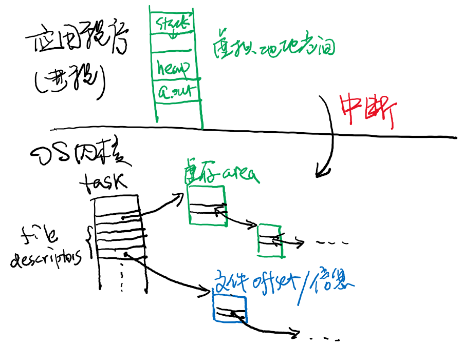
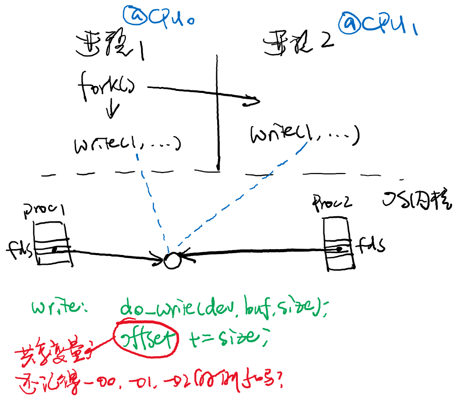

public: True class: center, middle # OS as a Program Runtime 蒋炎岩 <jyy@nju.edu.cn> 南京大学计算机软件研究所 --- class: center, middle # .red[周四随堂闭卷期中考试] 请大家相互转告！ --- # 本讲概述 > 操作系统是支持程序运行的软件，我们已经讲完了Three Easy Pieces中最重要的两个 > > * 并发 > * 虚拟化 > > 本讲从一个新视角对它们做一个概括性地总结 * 调度补充：Complete Fair Scheduler * 操作系统眼中的进程 --- class: center, middle # Complete Fair Scheduler --- # 公平的进程调度 对于(单处理器)系统中的进程，“谁吃亏了就让谁执行一会儿” - 类似于round robin (时间片轮转) - 为每个进程维护.blue[已经运行]的时间<math>T[p]</math> <center></center> --- # 实现公平的调度 在每次中断时 * 更新当前进程的运行时间 <math>T[current] \leftarrow T[current] + \Delta_t</math> * 如果当前进程已经运行了太久，则调度系统中运行时间最少的进程执行 <math>\min_p\{ T[p] \}</math> ---- 高效地实现CFS： - 什么样的数据结构能实现：更新<math>T[current]</math>；取最小值<math>\min_p\{ T[p] \}</math> -- count: false ---- - 怎样存储可能无限大的<math>T</math>？ (`u64`会溢出) - Hint: 假设<math>(\max_p{T[p]}) - ( \min_p{T[p]} )</math>足够小…… --- # CFS: 进程睡眠 进程可能因为等待I/O或操作系统其他部分不再能被调度执行 * 此时运行时间不再更新 * 例如休眠一小时，根据刚才“调度时间最少进程”的策略，将会被连续调度一小时 (这显然不太好) * .green[应该如何解决？] -- count: false ---- 如果一个进程睡眠了足够久后被唤醒 * 设置运行时间为<math>( \min_p{T[p]} ) - \delta</math> --- # CFS: 实现优先级 UNIX世界允许用户调整进程的优先级(nice) * -20 (最高优先级)：非常不nice (是个坏人) * 19 (最低优先级)：非常nice (是个礼让的好人) ---- CFS实现优先级并不是通过ML(F)Q实现的 * 优先级高的获得更多CPU；优先级低的获得更少CPU * 只需要把高优先级的进程的时钟调慢一些就行 --- # 虚拟运行时间 <math>T[p]</math> 是“虚拟”运行时间 - 优先级差1，速度相差1.26倍 (优先级相差10，大约差10倍) - <math>T[p]</math> 更新时，根据优先级折算 - nice = 0, vruntime和实际时间为1:1 - 运行10ms, nice = -1, 记8ms - 运行10ms, nice = 1, 记12ms ---- Demo: [nice-demo.c](/static/wiki/os/2019/demos/nice-demo.c) * 速度调节的技术用来[测试并发程序](https://zhuanlan.zhihu.com/p/51341151) --- # CFS小结 对长时间运行的进程 * 按照优先级，<math>1.26^{\Delta_{priority}}</math>比例地平分CPU ---- 对执行I/O长时间睡眠的进程 * 奖励<math>\delta</math>时间，即设置vruntime为<math>( \min_p{T[p]} ) - \delta</math> * 允许它有一小段时间的“boost”执行，降低交互程序的延迟 ---- 对于多处理器 * 进程是属于处理器的，只被某个处理器调度(最大化cache locality) * 只有在workload imbalance的时候，才进行cross-core migration * [Scheduling threads on a multicore machine is hard](https://www.usenix.org/system/files/conference/atc18/atc18-bouron.pdf) (ATC'18) * 比较深入地介绍了ULE和CFS --- class: center, middle # 期中复习 # Hello, OS World --- # Hello World的故事 > 经典问题：Hello World程序从`./a.out`按下回车键的那一刻，从软件到硬件，究竟发生了什么？ ```c #include <stdio.h> int main() { printf("Hello, OS World\n"); } ``` ---- 现在我们知道，Hello World的一生是从execve()开始的 * 继承父进程的文件描述符(`./a.out > /dev/null`; `./.a.out | cat`, ...) * 内核会为`a.out`创建代码、数据、堆栈 --- # 执行的第一条指令 从ELF文件的`entry`开始执行 * 静态链接：`a.out`的entry * 动态链接：`ld.so`的entry (动态链接器) ---- 动态链接libc：链接器使用一系列mmap把libc链接进进程地址空间 ```text open("/lib/x86_64-linux-gnu/libc.so.6", O_RDONLY|O_CLOEXEC) = 3 read(3, "\177ELF"..., 832) = 832 mmap(NULL, 8192, READ|WRITE, PRIVATE|ANONYMOUS, -1, 0) mmap(NULL, 4131552, READ|EXEC, PRIVATE|DENYWRITE, 3, 0) mprotect(..., 2097152, NONE) mmap(..., 24576, READ|WRITE, PRIVATE|FIXED|DENYWRITE, 3, 0x1e7000) mmap(..., 15072, READ|WRITE, PRIVATE|FIXED|ANONYMOUS, -1, 0) close(3) = 0 ``` --- # main()执行之前 `ld.so`会调用`_init()`；之后会调用`_start`, `__libc_start_main`, ... * 但都是普通的“用户代码”，libc也是一个普通的C程序 * 完成整个C runtime的初始化，其中可能调用系统调用 ```text execve("./a.out", ["./a.out"], 0x7fffc3fa1450 /* 23 vars */) = 0 brk(NULL) = 0x1024000 brk(0x10251c0) = 0x10251c0 brk(0x10461c0) = 0x10461c0 brk(0x1047000) = 0x1047000 ioctl(1, TCGETS, {B38400 opost isig icanon echo ...}) = 0 # ??? ``` -- count: false ---- 试试：`./a.out > /dev/null` ```text ioctl(1, TCGETS, 0x7fffcc389690) = -1 ENOTTY (Inappropriate ioctl for device) ``` --- # main()的执行 `printf(...)` * 如果有缓冲区，写入缓冲区 (fork会复制缓冲区)，否则直接用write写入`STDOUT_FILENO` * 如果缓冲区满足flush条件(.green[思考题]：flush的条件是什么？)，则用write写入 ---- main执行结束后，libc代码依然会执行 * 调用`atexit()`注册的回调函数 * 清空缓冲区、释放资源 * 执行`_exit()`退出 ---- ```text write(1, "Hello, World\n", 13) = 13 exit_group(0) = ? ``` --- class: center, middle # 进程：操作系统视角 --- # 复习：操作系统是什么？ 操作系统：加载.red[第一个进程]、实现好所有的.red[系统调用]，Hello World程序就能正确运行了！ ---- Lab1 & Lab2：操作系统就是个.red[中断处理程序] * 系统启动时完成初始化 * 然后等待中断到来(打开中断，死循环或`yield()` * 在中断返回时，精心设计一个进程的上下文(context) * 在CR3寄存器中配置好虚拟内存的地址映射和权限 * 设置好寄存器的值：CS:EIP; SS:ESIP; ... * 执行`iret`让进程暂时占有CPU执行 --- # 操作系统视角中的进程 “进程”只是操作系统中的一些.red[数据]，操作系统代码维护了代表“进程”的对象，以及和进程相关的对象 * 进程上下文(寄存器的数值) * 文件描述符(指向操作系统内对象的指针；文件访问的偏移量) * 内存映射区域 * 进程的地址空间(页表、地址空间中的页面) --- # 例子：[thread-os-mp.c](/static/wiki/os/2019/demos/thread-os-mp.c) 一个“进程” (没有虚拟地址空间，线程)，就是一个结构体 ```c struct task { const char *name; _Context context; char stack[4096]; } tasks[] = ... ``` 可以给这个结构体添加很多东西： ```c ... struct mm_struct *mmap_regions; struct file *fides[MAX_FD_PROC]; ... ``` 所有的“进程”的数据都是在中断处理程序中管理的，进程在执行时无权访问 --- # 操作系统视角中的进程 <center></center> --- class: center, middle # 重新理解系统调用 --- # 系统调用 > 操作系统为用户进程提供的一组API，通常在内核空间中实现，实现用户进程对操作系统对象/物理硬件访问的请求。 在刚才的视角上理解系统调用 * 进程 = 操作系统中的数据 * 系统调用 = 这些数据上的操作 * 例子：write()向某个操作系统的对象写入数据 * 例子：mmap()创建一个映射区域 --- # 理解系统调用的行为 以下代码预期的行为是什么？考虑打开的文件： * `/dev/stdout` (tty) * `log.txt` ---- ```c int fd = open(..., O_WRONLY); pid = fork(); if (pid == 0) { LOG(fd, "I am child\n"); // write(fd, buf, length); } else if (pid > 0) { LOG(fd, "I am father\n"); } ``` --- # 理解系统调用的行为 如何设计数据结构保存文件访问的偏移量？ * 存储在file descriptor上？ * 存储在文件里？ ---- 我们希望 (.red[操作系统设计]) * 系统中所有以O_APPEND的文件描述符共享一个offset * 每次单独的open都有一个独立的offset * fork()后父子进程在复制的文件描述符上共享一个offset --- # 操作系统与并发 操作系统中的对象是在处理器之间共享的 * 多处理器系统：原子性、顺序、可见性的丧失 <center></center> --- # 操作系统与并发 (cont'd) 系统调用执行需要协调系统中的各个部分 * 例子：read()管道时，需要等数据；write()管道时，需要等待管道的空位，否则阻塞 * 例子：read()终端时，需要等缓冲区中的数据；按下按键时，向缓冲区中写入数据 * 例子：使用DMA完成磁盘I/O，等待DMA中断的到来 ---- 操作系统中有大量的同步问题 * 条件变量 * 信号量 --- # 更多的例子 改变进程数据结构的系统调用 * mmap, open, pipe, read, write, close, ... 进程管理的系统调用 * fork, execve, exit ---- 它们之间两两相互作用的行为是什么？ * 这些.red[行为]对应了操作系统的设计(minilabs) * 用代码.red[表达]这些行为对应了操作系统的实现(oslabs) * 经过半个学期，大家.green[已经掌握了操作系统的本质]！